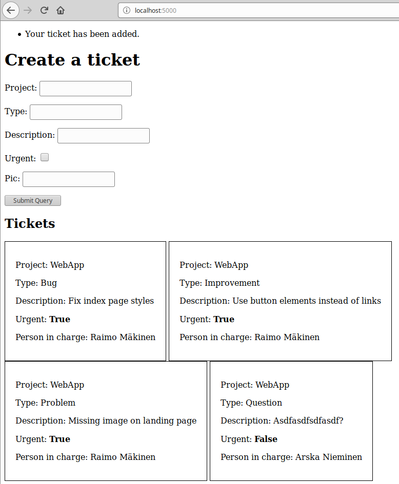
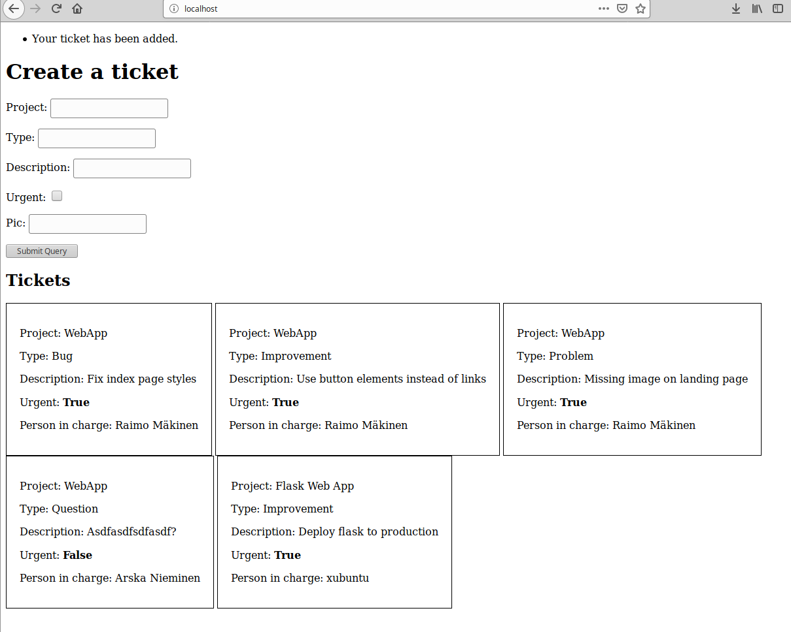
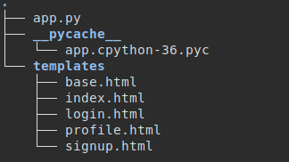
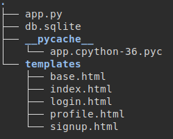
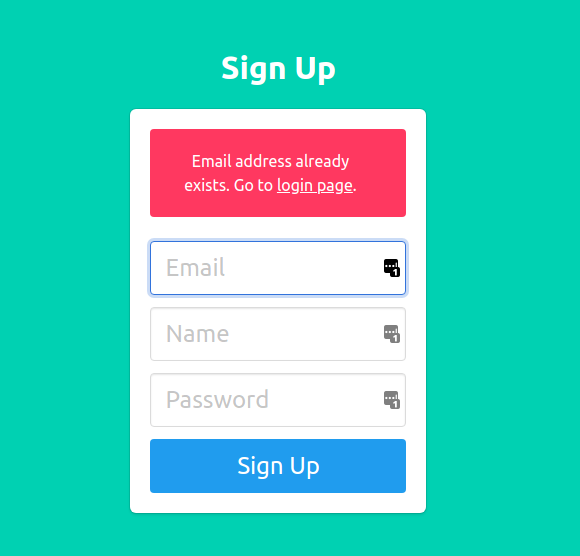
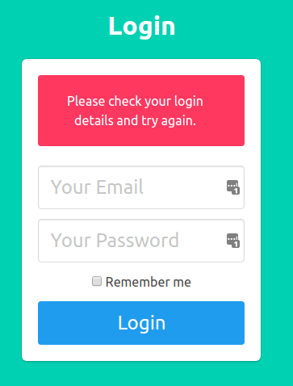
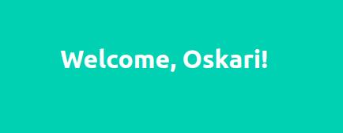

Tarkoituksenani on luoda projektinhallintajärjestelmän osa, jossa luodaan lomakkeella tiketti, ja listataan luodut tiketit. Tiketistä tulee käydä ilmi siihen liittyvä projekti, ongelman tyyppi, jonkinlainen kuvaus tai tehtävänanto, prioriteetti ja vaikka vastuuhenkilö.
Lähtötilanteessa minulla on tyhjä live-ubuntu käynnissä.
Ajoin komennon sudo apt-get update. Loin ohjelmalle kansion komennolla
mkdir projectmanager.
Loin helloworldille
moduulin komennolla nano hello.py, kirjoitin sinne täsmälleen samanlaisen helloworld-ohjelman, kuin
täällä:
http://terokarvinen.com/2020/hello-flask-python-web-app/
ja testasin sitä komennolla python3 hello.py. Flask-testiympäristö vaikutti toimivan.
Tässä kohdassa käytin lähteenä kurssin opettajan ohjetta:
http://terokarvinen.com/2020/flask-automatic-forms/.
Asensin pwgenin komennolla sudo apt-get -y install pwgen. Poistin
hello.py-moduulin.
Menin ohjelman varsinaiseen kansioon komennolla cd projectmanager. Loin mallinteille kansion komennolla
mkdir
templates. Loin moduulin projectmanager.py ja kopioin sinne autoformed.py-moduulin lähdesivulta. Tämän jälkeen kopioin
lähdesivulta koodipohjat kansioon templates tiedostoihin base.html ja replies.html.
Sitten asensin sqlalchemyn ja
flask-wtf:n komennoilla sudo apt-get -y install python3-flask-sqlalchemy ja sudo apt-get -y install
python3-flaskext.wtf. Käynnistin ohjelman komennolla python3 projectmanager.py ja testasin,
että
ohjelma käynnistyy
ilman virheilmoituksia.
Muokkasin ohjelmatiedostoja omaan tarkoitukseen sopivammiksi:
from flask import Flask, render_template, flash, redirect
from flask_sqlalchemy import SQLAlchemy
from wtforms.ext.sqlalchemy.orm import model_form
from flask_wtf import FlaskForm
import wtforms
app = Flask(__name__)
db = SQLAlchemy(app)
app.config["SQLALCHEMY_DATABASE_URI"] = "sqlite:///autoformed.db"
app.config["SQLALCHEMY_TRACK_MODIFICATIONS"] = False
app.config["SECRET_KEY"] = "vääräsalasana"
class Reply(db.Model):
id = db.Column(db.Integer, primary_key=True)
project = db.Column(db.String, nullable=False)
type = db.Column(db.String, nullable=False)
description = db.Column(db.String, nullable=False)
urgent = db.Column(db.Boolean, nullable=False)
pic = db.Column(db.String, nullable=False)
ReplyForm = model_form(model=Reply, base_class=FlaskForm, db_session=db.session)
@app.before_first_request
def beforeFirstRequest():
db.create_all()
@app.route("/", methods=["GET", "POST"])
def index():
form = ReplyForm()
if form.validate_on_submit():
reply = Reply()
form.populate_obj(reply)
db.session.add(reply)
db.session.commit()
flash("Your ticket has been added. ")
return redirect("/")
replies = db.session.query(Reply)
return render_template("replies.html", form=form, replies=replies)
def main():
app.run(debug=True)
if __name__ == "__main__":
main()
{% extends "base.html" %}
{% block body %}
<h1>Create a ticket</h1>
<form method=post action="/">
{{ form.csrf_token }}
{% for field in form if not field.name in ["csrf_token"] %}
<p>{{ field.label }}: {{ field }} <b>{{ " ".join(field.errors) }}</b></p>
{% endfor %}
<input type="submit">
</form>
<h2>Tickets</h2>
{% for reply in replies %}
<div style="border: 1px solid black; display: inline-block; padding: 20px;">
<p>Project: {{ reply.project }}</p>
<p>Type: {{ reply.type }}</p>
<p>Description: {{ reply.description }}</p>
<p>Urgent: <b>{{ reply.urgent }}</b></p>
<p>Person in charge: {{ reply.pic }}</p>
</div>
{% endfor %}
{% endblock %}
<!doctype html>
<html lang=en>
<head>
<title>Create a ticket</title>
<meta charset="utf-8">
</head>
<body>
{% with messages = get_flashed_messages() %}
{% if messages %}
<ul class=flashes>
{% for message in messages %}
<li>{{ message }}</li>
{% endfor %}
</ul>
{% endif %}
{% endwith %}
{% block body %}
<h1>Hello</h1>
{% endblock %}
</body>
</html>
Nyt ohjelmalla voi luoda tikettejä, jotka tallentuvat "projektinhallintajärjestelmän" tietokantaan.

Käytän tässä edellisen kohdan tietokantaohjelmaa joka tällä hetkellä sijaitsee hakemistossa
/home/xubuntu/projectmanager. Lähteenä käytän kurssiopettajan tuotantoasennusohjeita.
Päivitin pakettitiedot komennolla sudo apt-get update ja asensin curlin komennolla
sudo apt install curl.
Asensin Apachen komennolla sudo apt-get -y install apache2.
Komento curl localhost |grep title antoi tuloksen: Apache2 Ubuntu Default Page: It works
Testatakseni, että apache todella toimii vaihdoin apachen oletussivun komennolla
echo "Tehdään tuotantoasennus Flaskista"|sudo tee /var/www/html/index.html
Nyt komento curl localhost antoi tuloksen: Tehdään tuotantoasennus Flaskista.
Generoidakseni tekniselle käyttäjälle salasanan asensin pwgenin komennolla
sudo apt-get -y install pwgen.
Loin salasanan komennolla pwgen 30 1.
Tämän jälkeen loin ohjelmalle uuden teknisen käyttäjän komennolla sudo adduser projectmanager
Koska käyttäjällä ei tarvitse kirjautua sisään, lukitsin salasanakirjautumisen komennolla
sudo usermod --lock projectmanager.
Lisäsin itseni käyttäjän ryhmään muokatakseni käyttäjän kotihakemistossa sijaitsevia tiedostoja:
sudo adduser $(whoami) projectmanager
Jotta muutokset tulisi voimaan ajoin komennon su - xubuntu ja kirjauduin sisään. Tarkistin komennolla
groups, että käyttäjä xubuntu oli lisätty ryhmään projectmanager.
Loin uudelle virtualhostille conf-tiedoston komennolla
sudoedit /etc/apache2/sites-available/projectmanager.wsgi.conf:
<VirtualHost *:80>
ServerName projectmanager.example.com
WSGIDaemonProcess pmwsgi user=projectmanager group=projectmanager threads=5
WSGIScriptAlias / /home/projectmanager/public_wsgi/pm.wsgi
<Directory /home/projectmanager/public_wsgi/>
WSGIScriptReloading On
WSGIProcessGroup pmwsgi
WSGIApplicationGroup %{GLOBAL}
Require all granted
</Directory>
</VirtualHost>
Otin uuden virtualhostin käyttöön komennolla sudo a2ensite projectmanager.wsgi. Poistin vanhan
käytöstä komennolla sudo a2dissite 000-default.conf.
apache2ctl configtest antoi tuloksen:
Invalid command 'WSGIDaemonProcess', perhaps misspelled or...
Tämä johtui siitä, että mod-wsgi:tä ei ollut vielä asennettu. Asensin sen komennolla
sudo apt-get -y install libapache2-mod-wsgi-py3.
apache2ctl configtest antoi nyt tuloksen Syntax OK.
Käynnistin palvelimen uudelleen komennolla sudo systemctl restart apache2.
Tarkistin, miltä localhost näytti komennolla curl localhost. Sivun otsikossa oli statuskoodi
403 Forbidden.
Tarkistin apachen error.login viimeisen rivin komennolla tail -1 /var/log/apache2/error.log.
Virheviesti
valitti hakemistosta:
AH01630: client denied by server configuration: /home/projectmanager/public_wsgi/.
Hakemistoa ei ollut vielä olemassa. Loin hakemiston komennolla
sudo mkdir /home/projectmanager/public_wsgi.
Vaihdoin hakemiston oikeudet komennolla
sudo chown projectmanager:projectmanager /home/projectmanager/public_wsgi/.
Asetin hakemiston ryhmän jäsenille vielä read- write- ja execute-oikeudet komennolla
sudo chmod g=rwxs /home/projectmanager/public_wsgi.
Tarkistin tuloksen komennolla ls -ld /home/projectmanager/public_wsgi/ ja sain halutun tuloksen:
drwxrwsr-x 2 projectmanager projectmanager 40 Mar 7 09:31 /home/projectmanager/public_wsgi/.
Tarkistin komennolla curl -si localhost|grep title, miltä localhost näytti. Sivun otsikossa luki nyt
statuskoodi 404 Not Found
Tarkistin error.login viimeisen rivin komennolla tail -1 /var/log/apache2/error.log. Virheviestissä
oli nyt ilmoitus:
Target WSGI script not found or unable to stat: /home/projectmanager/public_wsgi/pm.wsgi.
WSGI-skriptiä ei ole vielä luotu. Lähdin luomaan skriptiä komennolla
nano /home/projectmanager/public_wsgi/pm.wsgi. Kopioin ja muokkasin tiedoston sisällöksi tuotantoasennusohjeista
seuraavan:
import sys
assert sys.version_info.major >= 3, "Python version too old in pm.wsgi!"
sys.path.insert(0, '/home/projectmanager/public_wsgi/')
from projectmanager import app as application
Komento curl -s localhost|grep title antoi nyt otsikkoon statuskoodin
500 Internal Server Error.
Tarkistin error.login viimeisen rivin komennolla tail -1 /var/log/apache2/error.log. Virheviestistä
löytyi nyt ilmoitus:
ModuleNotFoundError: No module named 'projectmanager'.
Moduuli on jo olemassa, mutta ei oikeassa paikassa. Kopioin koko ohjelman teknisen käyttäjän hakemistoon
public_wsgi komennolla cp -r /home/xubuntu/projectmanager/. /home/projectmanager/public_wsgi/.
Ajoin komennon touch /home/projectmanager/public_wsgi/pm.wsgi , että muutokset tulisivat mahdollisesti
voimaan.
Komento curl localhost antoi vieläkin tuloksen 500 Internal Server Error.
Tarkistin lokin viimeisen rivin komennolla tail -1 /var/log/apache2/error.log.
Virheilmoitus oli vaihtunut: ModuleNotFoundError: No module named 'flask'.
Ohjelman käyttämät kirjastot täytyi vielä asentaa. Asensin nämä komennolla:
sudo apt-get -y install python3-flask python3-flaskext.wtf python3-flask-sqlalchemy.
Komento curl localhost antoi silti tuloksen 500 Internal Server Error.
Tarkistin lokin viimeisen rivin komennolla tail -1 /var/log/apache2/error.log. En nähnyt mitään kovin
informatiivista joten tarkistin 5 viimeistä riviä komennolla tail -5 /var/log/apache2/error.log
Virheilmoituksesta löytyi viesti:
PermissionError: [Errno 13] Permission denied: '/home/projectmanager/public_wsgi/templates/replies.html'.
Ohjelman alihakemistoihin oli näköjään jäänyt vielä vanhoja käyttöoikeuksia. Korjasin nämä komennolla
sudo chown -R projectmanager:projectmanager /home/projectmanager/public_wsgi/.
Kokeilin vielä kerran curl localhostia ja tulos näytti oikealta. Avasin localhostin selaimessa:
Testasin uuden tiketin lisäystä:
Ohjelma näyttää toimivan.
Tässä osassa käytän lähteenä DigitalOceanin flask-login-tutorialia. Viittaan tutoriaaliin myöhemmin lähdesivuna. En saanut jostain syystä blueprinttien importtausta toimimaan kunnolla, joten ajan säästämiseksi teen tämän ohjelman ilman niitä.
Loin projektille tekemääni kansioon tiedoston app.py, ja sille seuraavan sisällön:
from flask import Flask, render_template
from flask_sqlalchemy import SQLAlchemy
db = SQLAlchemy()
app = Flask(__name__)
app.config['SECRET_KEY'] = 'salasanatähän'
app.config['SQLALCHEMY_DATABASE_URI'] = 'sqlite:///db.sqlite'
db.init_app(app)
@app.route("/")
def index():
return render_template('index.html')
@app.route("/profile")
def profile():
return render_template('profile.html')
@app.route('/login')
def login():
return render_template('login.html')
@app.route('/signup')
def signup():
return render_template('signup.html')
@app.route('/logout')
def logout():
return 'Logout'
app.run(Debug=True)
Tämän jälkeen loin templatet:
<!DOCTYPE html>
<html>
<head>
<meta charset="utf-8">
<meta http-equiv="X-UA-Compatible" content="IE=edge">
<meta name="viewport" content="width=device-width, initial-scale=1">
<title>Flask Auth Example</title>
<link rel="stylesheet" href="https://cdnjs.cloudflare.com/ajax/libs/bulma/0.7.2/css/bulma.min.css" />
</head>
<body>
<section class="hero is-primary is-fullheight">
<div class="hero-head">
<nav class="navbar">
<div class="container">
<div id="navbarMenuHeroA" class="navbar-menu">
<div class="navbar-end">
<a href="/" class="navbar-item">
Home
</a>
<a href="/profile" class="navbar-item">
Profile
</a>
<a href="/login" class="navbar-item">
Login
</a>
<a href="/signup" class="navbar-item">
Sign Up
</a>
<a href="/logout" class="navbar-item">
Logout
</a>
</div>
</div>
</div>
</nav>
</div>
<div class="hero-body">
<div class="container has-text-centered">
{% block content %}
{% endblock %}
</div>
</div>
</section>
</body>
</html>
{% extends "base.html" %}
{% block content %}
<h1 class="title">
Flask Login Example
</h1>
<h2 class="subtitle">
Easy authentication and authorization in Flask.
</h2>
{% endblock %}
{% extends "base.html" %}
{% block content %}
<div class="column is-4 is-offset-4">
<h3 class="title">Login</h3>
<div class="box">
<form method="POST" action="/login">
<div class="field">
<div class="control">
<input class="input is-large" type="email" name="email" placeholder="Your Email" autofocus="">
</div>
</div>
<div class="field">
<div class="control">
<input class="input is-large" type="password" name="password" placeholder="Your Password">
</div>
</div>
<div class="field">
<label class="checkbox">
<input type="checkbox">
Remember me
</label>
</div>
<button class="button is-block is-info is-large is-fullwidth">Login</button>
</form>
</div>
</div>
{% endblock %}
{% extends "base.html" %}
{% block content %}
<h1 class="title">
Welcome, Oskari!
</h1>
{% endblock %}
{% extends "base.html" %}
{% block content %}
<div class="column is-4 is-offset-4">
<h3 class="title">Sign Up</h3>
<div class="box">
<form method="POST" action="/signup">
<div class="field">
<div class="control">
<input class="input is-large" type="email" name="email" placeholder="Email" autofocus="">
</div>
</div>
<div class="field">
<div class="control">
<input class="input is-large" type="text" name="name" placeholder="Name" autofocus="">
</div>
</div>
<div class="field">
<div class="control">
<input class="input is-large" type="password" name="password" placeholder="Password">
</div>
</div>
<button class="button is-block is-info is-large is-fullwidth">Sign Up</button>
</form>
</div>
</div>
{% endblock %}
Projektin rakenne nyt:
Asetin FLASK_APP = muuttujaan arvon app komennolla export FLASK_APP=app ja ympäristön
kehitysympäristöksi komennolla export FLASK_ENV=development. Ohjelma käynnistyy nyt komennolla
flask run.
Jotta käyttäjiä voitaisiin tallentaa tietokantaan, täytyy käyttäjille tehdä tietokantamalli sekä tietokanta alustaa. Lisäsin tiedostoon app.py seuraavat rivit
class User(db.Model):
id = db.Column(db.Integer, primary_key=True)
email = db.Column(db.String(100), unique=True)
password = db.Column(db.String(100))
name = db.Column(db.String(1000))
@app.before_first_request
def beforeFirstRequest():
db.create_all()
Ensimmäisen käynnistyksen jälkeen ohjelma on luonut tietokannan tiedostoon db.sqlite.
Käyttäjätili luodaan lomakkeen HTTP POST-pyynnöllä. Lisäsin seuraavan reitin ohjelmaan:
@app.route('/signup', methods=['POST'])
def signup_post():
email = request.form.get('email')
name = request.form.get('name')
password = request.form.get('password')
user = User.query.filter_by(email=email).first()
if user:
flash('Email address already exists')
return redirect('/signup')
new_user = User(email=email, name=name, password=generate_password_hash(password, method='sha256'))
db.session.add(new_user)
db.session.commit()
return redirect('/login')
Ylläolevassa koodissa lomakkeesta saatu salasana tallennetaan muuttujaan ja siitä luodaan salasanatiiviste
werkzeug.security-kirjaston metodilla generate_password_hash().
Flask-importteihin täytyi myös lisätä request, redirect ja flash
Tämän lisäksi seuraava import: from werkzeug.security import generate_password_hash
Metodissa signup_post() tarkastetaan, löytyykö tietokannasta käyttäjää, jolla on sama sähköpostiosoite. Jos sellainen löytyy, täytyy käyttäjälle antaa virheilmoitus.
Lisään seuraavan pätkän tiedostoon signup.html ennen form-tagia:
{% with messages = get_flashed_messages() %}
{% if messages %}
<div class="notification is-danger">
{{ messages[0] }}. Go to <a href="/login">login page</a>.
</div>
{% endif %}
{% endwith %}
Nyt, jos yrittää lisätä olemassaolevan käyttäjän, tulostuu virheilmoitus:
Jotta käyttäjä voisi kirjautua sisään, täytyy tunnukset tarkistaa.
Lisään werkzeug.security-importteihin metodin check_password_hash
Määrittelen osoitteen "/login" reititykset uudelleen:
@app.route('/login', methods=['GET'])
def login():
return render_template('login.html')
@app.route('/login', methods=['POST'])
def login_post():
email = request.form.get('email')
password = request.form.get('password')
remember = True if request.form.get('remember') else False
user = User.query.filter_by(email=email).first()
if not user or not check_password_hash(user.password, password):
flash('Please check your login details and try again.')
return redirect('/login')
return redirect('/profile')
Tässä koodinpätkässä verrataan salasanatiivistettä annettuun salasanaan werkzeug-kirjaston metodilla
check_password_hash(), jolle annetaan parametrina käyttäjän lomakkeelle syöttämä salasana, sekä
tietokannasta haetun käyttäjän salasanatiiviste
Lisäksi login-templateen seuraava ennen form-tagia:
{% with messages = get_flashed_messages() %}
{% if messages %}
<div class="notification is-danger">
{{ messages[0] }}
</div>
{% endif %}
{% endwith %}
Nyt väärillä tunnuksilla kirjautumisyrityksestä tulee virheviesti:
Oikeilla tunnuksilla kirjauduttaessa käyttäjä ohjautuu sivulle "/profile":
